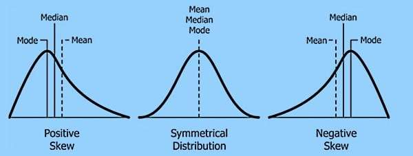
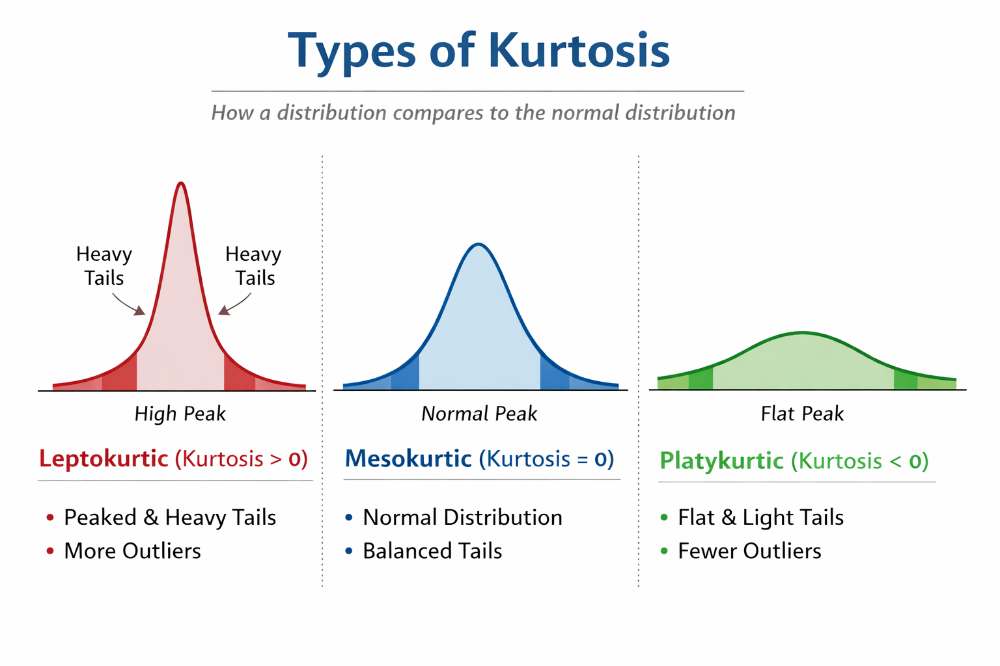

Statistics - Descriptive Statistics
Descriptive Statistics
Central Tendency
Mean: The mean is the arithmetic average and represents the central position of a dataset by summing all values and dividing by the number of observations. The mean is sensitive to outliers \[ \bar{x} = \frac{1}{n}\sum_{i=1}^{n} x_i \]
Median: The median is the middle value of a dataset after sorting the observations in ascending order. For an odd number of data points the median is the middle value and for an even number of data points median is the average of the two middle values. The median is robust to outliers and skewed distributions, making it a better measure of “typical value” when the data are heavily skewed.
Mode: The most frequently occurring value in the sample or Population.
Dispersion
Range: The difference between the largest and smallest observations.
Variance: Measuring how far, on average, each observation is from the mean, in squared units. It is computed as the average of the squared deviations from the mean. Squaring the deviations ensures that positive and negative deviations do not cancel and also penalises larger deviations more heavily.
Sample variance(estimating population variability by sample): \[ s^2 = \frac{1}{n-1}\sum_{i=1}^{n} (x_i - \bar{x})^2 \]
Population variance(\(\mu\) is population mean): \[ \sigma^2 = \frac{1}{n}\sum_{i=1}^{n} (x_i - \mu)^2 \]
Standard Deviation(SD): The square root of the variance. It describes the typical distance of observations from the mean, expressed in the same units as the original data. A larger standard deviation means the data are more spread out; a smaller one means the data are more tightly clustered around the mean. \[ s = \sqrt{s^2} = \sqrt{\frac{1}{n}\sum_{i=1}^{n} (x_i - \mu)^2} \]
Interquartile Range(IQR): Measuring the spread of the middle 50% of the data. It is defined as the difference between the third quartile \(Q_3\)(75th percentile) and the first quartile \(Q_1\)(25th percentile). Because it ignores the lower 25% and upper 25% of values, IQR is robust to outliers and is widely used in boxplots and outlier detection. \[ \text{IQR} = Q_3 - Q_1 \]
Mean Absolute Deviation(MAD): It is the average of the absolute deviations of each observation from the mean. Unlike variance, it does not square the deviations, making it more interpretable and less sensitive to extreme values. It provides a linear notion of spread: “on average, how far are observations from the mean?” \[ \text{MAD} = \frac{1}{n}\sum_{i=1}^{n} \left|x_i - \bar{x}\right| \]
Coefficient of Variation (CV): It is a dimensionless measure of relative variability, defined as the ratio of the standard deviation to the mean. It is especially useful when comparing the variability of datasets with different units or vastly different means(e.g. comparing variability in height vs. weight). \[ \text{CV} = \frac{s}{\bar{x}} \] #### Shape
Skewness: It quantifies the degree of asymmetry of a distribution around its mean.
- symmetrical(zero, skewness≈0, Mean ≈ Median ≈ Mode) skewness: the distribution is symmetrical on both sides.
- Positive(right, skewness>0, Mean > Median > Mode) skewness: long tail on the right; many small values and a few very large values.
- Negative(left, skewness<0, Mean < Median < Mode) skewness: long tail on the left; many large values and a few very small values.
It helps judge whether a distribution deviates from symmetry, which affects the suitability of models that assume normality.
\[ \text{Skewness} = \frac{n}{(n-1)(n-2)} \sum_{i=1}^{n} \left( \frac{x_i - \bar{x}}{s} \right)^3 \]

- Kurtosis: It measures the heaviness of the tails and the sharpness of the peak of a distribution compared to the normal distribution.
- Mesokurtic → normal distribution
- Leptokurtic → heavier tails, more extreme outliers.
- Platykurtic → lighter tails, less extreme outliers.
In statistical analysis, we usually focus on excess kurtosis, which is defined as: the excess kurtosis of a normal distribution is 0 \[ \text{Kurtosis} = \frac{n(n+1)}{(n-1)(n-2)(n-3)} \sum_{i=1}^{n} \left( \frac{x_i - \bar{x}}{s} \right)^4 \frac{3(n-1)^2}{(n-2)(n-3)} \]

Relationship
- Covariance: It describes how two variables vary together.
- Positive covariance: when one variable is above its mean, the other tends to be above its mean as well.
- Negative covariance: when one is above its mean, the other tends to be below. The magnitude depends on the units of the variables, so covariance itself is not normalised and can be hard to compare across datasets.
\[ \text{Cov}(X,Y) = \frac{1}{n-1} \sum_{i=1}^{n} (x_i - \bar{x})(y_i - \bar{y}) \]
- Correlation: The normalised version of covariance, obtained by dividing covariance by the product of the standard deviations of the two variables. The most common measure is the Pearson correlation coefficient, which captures the strength and direction of a linear relationship and is bounded between -1 and 1.
- r≈1: strong positive linear relationship
- r≈−1: strong negative linear relationship
- r≈0: little or no linear relationship
\[ r = \frac{\text{Cov}(X,Y)}{s_X s_Y} = \frac{ \sum_{i=1}^{n} (x_i - \bar{x})(y_i - \bar{y}) }{ \sqrt{\sum_{i=1}^{n} (x_i - \bar{x})^2} \sqrt{\sum_{i=1}^{n} (y_i - \bar{y})^2} } \]